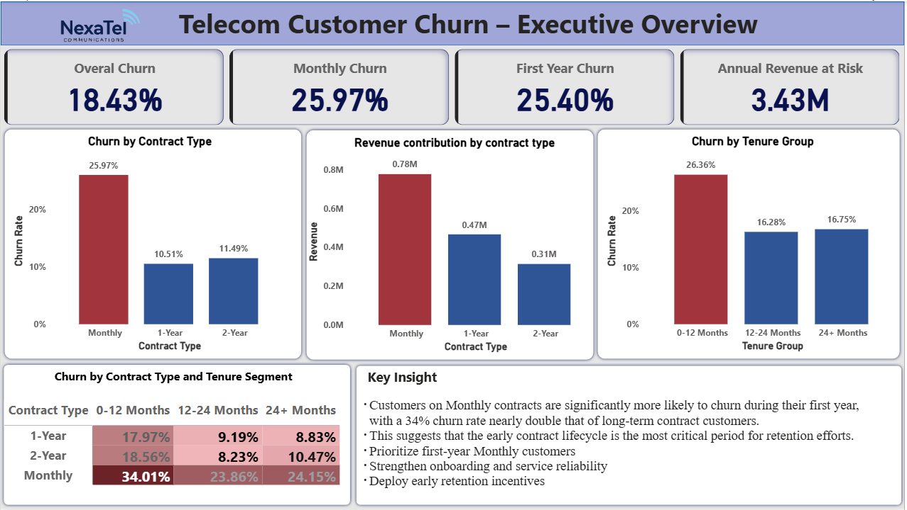
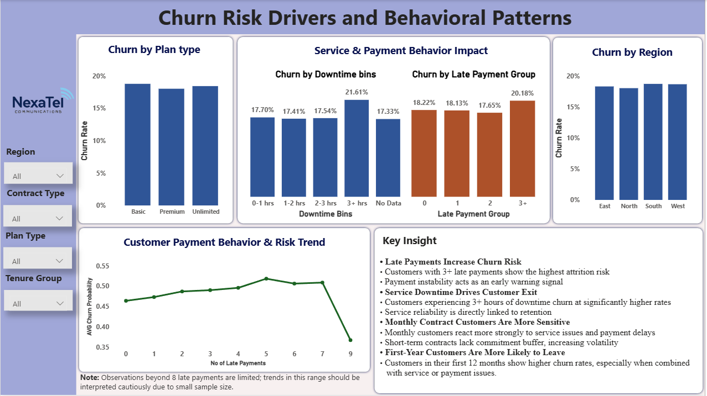
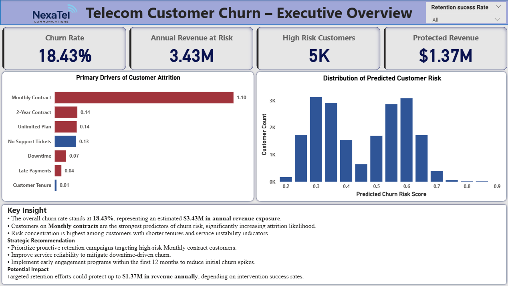

Telecom Churn Analysis – NexaTel Communications
This case study presents a professional end-to-end analysis of customer churn in a telecom company. We explore the business problem, data understanding, SQL analysis, Python modeling, Power BI visualization, and final business insights in a clear, recruiter-friendly manner.
Business Problem
Customer churn is one of the biggest challenges for telecom companies. Losing customers not only reduces monthly revenue but also increases marketing costs to acquire new customers. NexaTel wanted to identify:
- Which customers are at the highest risk of churn
- Revenue exposure due to potential churn
- Key drivers influencing churn
- Strategies to reduce churn and protect revenue
The overall churn rate was 18.43% with monthly contracts showing the highest risk.
Data Understanding
The dataset included customer subscriptions, support tickets, payments, service downtime, and plan types. Key columns included:
- customer_id: Unique identifier for each customer
- contract_type: Monthly, 1-Year, 2-Year
- plan_type: Basic, Premium, Unlimited
- tenure_months: Customer duration in months
- churn_flag: Indicates if a customer churned (1) or not (0)
- total_tickets: Total support tickets raised
- downtime_hours: Total service downtime reported
- late_payment_count: Number of late payments
Missing data was handled thoughtfully: average satisfaction score nulls were imputed, and downtime hours with missing values were addressed based on mean values of similar customers.
SQL Analysis
SQL was used to extract and aggregate customer data:
- Joined subscription and support ticket tables to calculate churned customer counts
- Aggregated churn by contract type, tenure, and region
- Calculated monthly revenue lost due to churn for each segment
- Created cohort tables to analyze first-year vs long-term customer churn
View the SQL query used for analysis
For example, we found that monthly contract customers in their first 12 months had a churn rate of 34% and contributed significantly to revenue risk.
Python Modeling & Statistical Analysis
Python was used to perform data cleaning, modeling, and risk prediction:
- Missing values were imputed and categorical variables encoded
- Logistic regression and Random Forest models were used to predict churn probability
- Model evaluation included accuracy, recall, and feature importance
- Key churn drivers identified: Monthly contract, service downtime, late payments, and tenure
- Revenue-at-risk analysis was performed for the top 1000 high-risk customers, showing potential revenue protection of $1.37M
View the Python code used for analysis
Power BI Dashboard
A 3-page professional dashboard was created to present insights visually:
Page 1: Executive Overview
- KPI Cards: Overall churn, monthly churn, high-risk customers, annual revenue at risk
- Bar charts and heatmaps for churn by contract and tenure
- Text box summarizing first-year risk insights

Page 2: Behavioral & Service Risk Drivers
- Visuals showing churn by downtime bins, late payment counts, plan type, and region
- Scatter plots showing churn probability distribution
- Text box summarizing behavioral insights for decision-making

Page 3: Predictive Modeling & Strategy
- Feature importance visualization for top churn drivers
- Revenue protection simulation with adjustable retention success rate
- Text box summarizing actionable retention strategies

Key Insights
- Payment delays and service downtime are major churn drivers.
- Monthly contract customers are most sensitive to service issues.
- First-year customers have the highest churn risk.
- Targeted retention strategies could protect $1.37M in potential revenue.
Conclusion
This end-to-end case study demonstrates how SQL, Python, and Power BI can be combined to understand churn, predict high-risk customers, quantify revenue impact, and recommend actionable strategies. By presenting clean dashboards, executive insights, and financial impact, this project showcases the skills needed for a professional data analyst or business intelligence role.
All insights are actionable and designed for decision-makers. Recruiters and hiring managers can clearly see both technical and business impact.
Project Links
View GitHub Repository
← Back to Portfolio